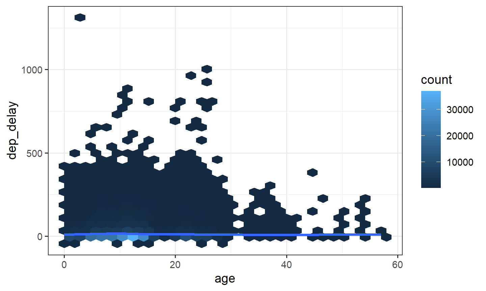

8.2 dplyr: Filtering Joins
semi_join() and anti_join() keep or drop rows of x. They do not add columns.


1. semi_join() and anti_join()
A mutating join adds columns. A filtering join
keeps or drops rows of x and leaves the
columns of x alone.
semi_join(x, y)— rows ofxthat have a match inyanti_join(x, y)— rows ofxthat do not have a match iny
library(tidyverse)
library(nycflights13)
flights |>
semi_join(planes, by = "tailnum")## # A tibble: 284,170 × 19
## year month day dep_time sched_dep_time dep_delay arr_time sched_arr_time
## <int> <int> <int> <int> <int> <dbl> <int> <int>
## 1 2013 1 1 517 515 2 830 819
## 2 2013 1 1 533 529 4 850 830
## 3 2013 1 1 542 540 2 923 850
## 4 2013 1 1 544 545 -1 1004 1022
## 5 2013 1 1 554 600 -6 812 837
## 6 2013 1 1 554 558 -4 740 728
## 7 2013 1 1 555 600 -5 913 854
## 8 2013 1 1 557 600 -3 709 723
## 9 2013 1 1 557 600 -3 838 846
## 10 2013 1 1 558 600 -2 849 851
## # ℹ 284,160 more rows
## # ℹ 11 more variables: arr_delay <dbl>, carrier <chr>, flight <int>,
## # tailnum <chr>, origin <chr>, dest <chr>, air_time <dbl>, distance <dbl>,
## # hour <dbl>, minute <dbl>, time_hour <dttm>flights |>
anti_join(planes, by = "tailnum")## # A tibble: 52,606 × 19
## year month day dep_time sched_dep_time dep_delay arr_time sched_arr_time
## <int> <int> <int> <int> <int> <dbl> <int> <int>
## 1 2013 1 1 558 600 -2 753 745
## 2 2013 1 1 559 600 -1 941 910
## 3 2013 1 1 600 600 0 837 825
## 4 2013 1 1 602 605 -3 821 805
## 5 2013 1 1 608 600 8 807 735
## 6 2013 1 1 611 600 11 945 931
## 7 2013 1 1 623 610 13 920 915
## 8 2013 1 1 624 630 -6 840 830
## 9 2013 1 1 628 630 -2 1137 1140
## 10 2013 1 1 629 630 -1 824 810
## # ℹ 52,596 more rows
## # ℹ 11 more variables: arr_delay <dbl>, carrier <chr>, flight <int>,
## # tailnum <chr>, origin <chr>, dest <chr>, air_time <dbl>, distance <dbl>,
## # hour <dbl>, minute <dbl>, time_hour <dttm>inner_join(x, y) also drops unmatched x
rows, but it duplicates an x row once per
match in y. semi_join() never duplicates
x. If you only want “does a match exist?”, use
semi_join().
anti_join() is the diagnostic: destinations with no
airport row, planes that never flew, weather hours with no flights.
flights |>
anti_join(airports, by = c("dest" = "faa")) |>
distinct(dest)## # A tibble: 4 × 1
## dest
## <chr>
## 1 BQN
## 2 SJU
## 3 STT
## 4 PSE2. Duplicate keys and many-to-many
If a key appears twice in x and three times in
y, an inner or left join returns six rows for that key.
That is a many-to-many join. Sometimes it is what you want; often it is
a bad key.
x <- tribble(
~key, ~val_x,
1, "x1",
1, "x2"
)
y <- tribble(
~key, ~val_y,
1, "y1",
1, "y2"
)
left_join(x, y, by = "key")## # A tibble: 4 × 3
## key val_x val_y
## <dbl> <chr> <chr>
## 1 1 x1 y1
## 2 1 x1 y2
## 3 1 x2 y1
## 4 1 x2 y2semi_join(x, y, by = "key")## # A tibble: 2 × 2
## key val_x
## <dbl> <chr>
## 1 1 x1
## 2 1 x2The left join has four rows. The semi join still has two — the
original x. Check keys with count() before you
join (note 8.1).
3. Worst delay days, then those flights
Ten days with the highest median dep_delay, then every
flight on those days. Build a small table of keys, then
semi_join().
worst <- flights |>
group_by(year, month, day) |>
summarize(med_del = median(dep_delay, na.rm = TRUE), .groups = "drop") |>
slice_max(med_del, n = 10)
flights |>
semi_join(worst, by = c("year", "month", "day"))## # A tibble: 9,806 × 19
## year month day dep_time sched_dep_time dep_delay arr_time sched_arr_time
## <int> <int> <int> <int> <int> <dbl> <int> <int>
## 1 2013 12 17 4 2359 5 459 437
## 2 2013 12 17 8 2159 129 155 2322
## 3 2013 12 17 10 1930 280 313 2238
## 4 2013 12 17 12 1740 392 135 1900
## 5 2013 12 17 14 2130 164 313 18
## 6 2013 12 17 14 2250 84 122 2356
## 7 2013 12 17 29 2055 214 303 2332
## 8 2013 12 17 36 2150 166 212 2311
## 9 2013 12 17 38 2250 108 206 8
## 10 2013 12 17 38 2035 243 140 2210
## # ℹ 9,796 more rows
## # ℹ 11 more variables: arr_delay <dbl>, carrier <chr>, flight <int>,
## # tailnum <chr>, origin <chr>, dest <chr>, air_time <dbl>, distance <dbl>,
## # hour <dbl>, minute <dbl>, time_hour <dttm>filter() with a long %in% list is clumsier
once the key has several columns.
4. Plane age and delay
planes$year is the year of manufacture. Age in 2013 is
2013 - year. Join, then plot. Rename year
first so it does not clash with flights$year.
flights |>
left_join(
planes |> select(tailnum, plane_year = year),
by = "tailnum"
) |>
mutate(age = 2013 - plane_year) |>
filter(!is.na(age), !is.na(dep_delay)) |>
ggplot(aes(x = age, y = dep_delay)) +
geom_hex() +
geom_smooth(se = FALSE) +
theme_bw()
geom_hex() needs the hexbin package.
geom_smooth() alone is enough if you do not want the
bins.
5. Practice
- Destinations in
flightsthat are missing fromairports. How many flights is that? - Airports that never appear as a
dest. - The ten days with the highest median
dep_delay, then all flights on those days. - A plot of plane age against
dep_delay.